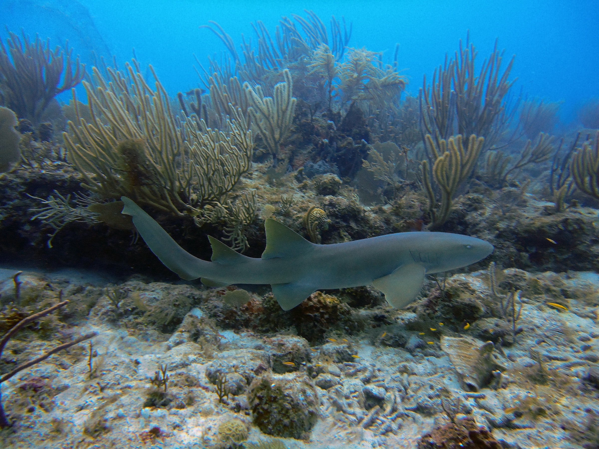

Shark Species
When most folks think about where sharks live, many imagine the coasts or the open ocean, but there are many sharks that can be found in the gulf of Mexico. Let's familiarize ourselves with some of them.

A nurse shark swimming in a reef